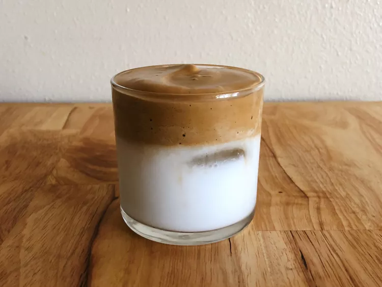

Dalgona Coffee (Whipped Coffee)

This South Korean coffee drink now enjoys global popularity, after being everywhere on social media during the Coronavirus pandemic.
Ingredients
- 2 tablespoons boiling water
- 2 tablespoons instant coffee
- 2 tablespoons white sugar
- 1 cup whole milk
Steps
- Whisk boiling water, instant coffee, and sugar together until coffee is dissolved. Continue to whisk until mixture becomes thick and forms a peak, 2 to 3 minutes.
- Pour milk into a glass. Pour the frothy coffee on top of the milk.